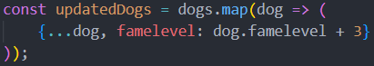

This week we were introduced to nodemon. Nodemon is a tool we use as developers to test with in node. We can set up settings for when it should restart the server. This means instead of having to write node file.js all the time, we can just run it with nodemon with a command:
For installation of nodemon all we installed nodemon globally, although you can install it in the directory you want to use it in. Installing in globally saves time in the future as we don't have to isntall it in every project.
For loops we talked about the different loop methods
forEach, map, filter, sort, find, reduce.
We talked about the spread operator "...". We use this so because if we want to continue working on the object afterwards, we don't tamper with the original object. This is useful for more functional programming as we create new objects from the old instead of reusing the the old ones. It also provides a more clean code, and easier to maintain in the future as we don't care what it recieves as the function, always just creates new objects out of whatever comes in, so we could just edit this function instead of thinking about what it recieves.
In this case we also use map. Map creates a new array by mapping the elements inside to the new array. By using both map and spread operator we create new elements based on the old ones, but the output that we get is entirely a new array that we can continue using. With this method the original dog array would remain intact and unmodified.
Then we used another method that modifies the original array but also creates a new array. Both can be used as we would continue, working on the array we get as output but it's important to understand the differences.
In this version we directly modify each dog in the dog array and afterwards we return that dog to our new array. Whereas before, we used the spread operator to to create a new dog with the values of the old dog array then added the famelevel to the dogs.
For URL's it's important that we can distinguish the different parts of the URL.
https://www.google.com/search?h1=en&q=test
In this example the https:// stands for HTTP secure, or hypertext transfer protocol. The "s" is important as it provides an additional layer of security. The www is the subdomain, world wide web, and the google.com is the domain name. Then we are followed by an endpoint in this case /search, followed by query parameters h1=en&q=test. For declaration of the query parameters we use a ?. We can also use sections as i do on this site with # if you click a link in the left menu.
Last thing worth noting is that when we use localhost:8080 it is what we normally set up for our development environments. The :8080 in the end is declaration of the port number.
We also talked a bit about important PORT numbers. And we have some standard PORTs we need to know.
We talked a bit about parameters and how to use them in express. For parameters we write ":something", and when we want to retrieve those parameters, we retrieve them by using the req object. It contains params, query, body & more but those 3 is all we need to use for now.
For post we learned about the body parser in express. This is what we use for now. We implement this by using the following command where we want to be able to body parse:
To actually use this in a post method we need to retrieve the body. We do this by using:
Then we have the object that we can use. This object contains anything we sent along, could be firstName etc. and we retrieve these items by just assigning the req.body to a const and then using .firstName etc. on what we want to retrieve.
We then used the following information to build up a drinks API where we used get and post methods but not put/patch yet.
This week we also served our first HTML with express. We did this with using
__dirname
that gives us the directory name so we can use that a long with the location in our directory for the html and use sendFile to serve it.By concatenating the __dirname with the html location in our project we serve the files location with our get method.